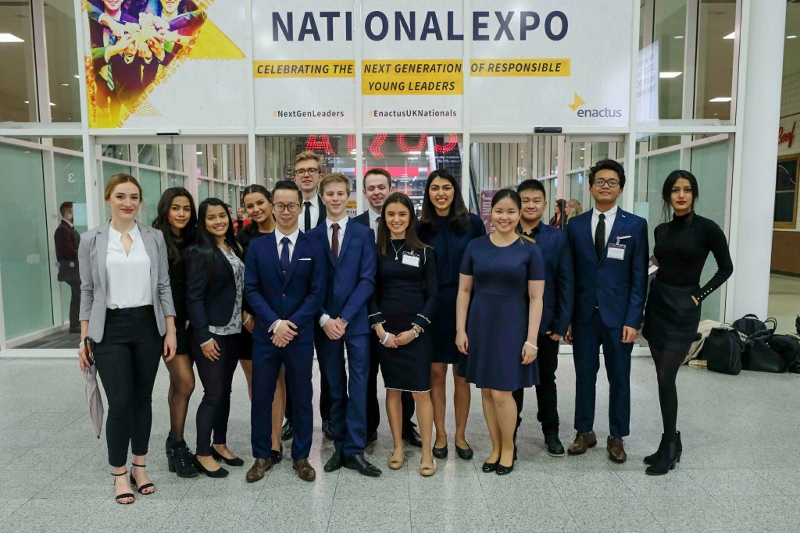

Enactus
Enactus is an internationally recognised social enterprise society that seeks to improve the lives of others through entrepreneurial action. Since joining Enactus Loughborough in October, I have been a team member of a new successful commerical project, worked in 3 commitee positions and was selected as Member of the Year.

Roles Within Society
Commerical Manager (Nov-April 2018)
Led and monitored 3 commercial projects such as ‘The Loughborough Apprentice’ to raise money to fund other social enterprise projects within the society. Due to these being voluntarily student-led, encouraging participation and applying for grants from companies has enhanced my persuasion and negotiation skills. These commercial projects are primarily events, which has developed my ability to plan and organise.
Treasurer (Nov 2017-April 2019)
Analysed figures and budgeted for upcoming events, improving decision making skills and ability to synthesize information. Regularly present updates to members of the society and external guests, enhancing communication and presentation skills
Corporate Relations Executive (May 2018-April 2019)
Created a monthly newsletter informing business advisors on project updates using MailChimp software. Organised quarterly Business Advisory meetings, enabling students and business advisors from companies such as Capital One and Enterprise-Rent-a-Car to network and share ideas and knowledge. Submitted projects for competitions as a means of raising funds, contributing to Enactus Loughborough’s highest annual grants total of £925, through winning competitions for funding from various companies such as Tesco and Accenture
Projects
The Loughborough Apprentice is a sustainable commercial project that enhances the entrepreneurial skills of its contestants (Loughborough students) through business challenges. During the first year of its launch, the team and I designed challenges that would enhance the skills of the competitors whilst enabling Enactus Loughborough to make a profit, for example for one of the stages, teams had to sell items at the market in town. Money was also made through charging contestants to participate, and costs were minimised by securing a summer internship as the prize from Enterprise-Rent-a-Car. Other projects include...
Opportunities
In November I went on a weekend Enactus training course at Grantham PGL Center where I attended workshops such as 'Retaining and Motivating your members' and 'How to Manage conflict'. In March I attended 'Future Leaders Training' hosted by Amazon which trained us in building our network the importance of taking risks.